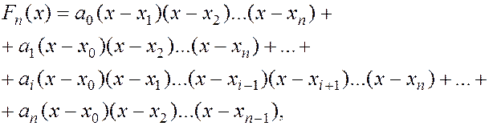
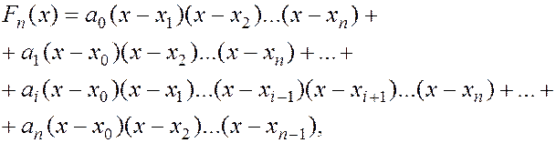
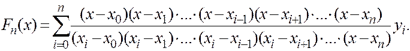
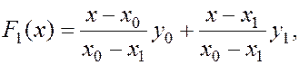

Будемо шукати многочлен  у такому вигляді:
у такому вигляді:

(5)
де коефіцієнти невідомі. Кожний доданок виразу (5) є многочленом n-го степеня, при цьому біля кожного із коефіцієнтів множник відсутній. Визначимо шукані коефіцієнти скориставшись умовою (3). Покладемо в (5) дістанемо :
звідси:
Аналогічно обчислюємо інші коефіцієнти
Підставивши ці значення коефіцієнтів аі в (5), дістанемо вираз для інтерполяційного многочлена.

Знайдений многочлен називається інтерполяційним многочленом Лагранжа. Формула Лагранжа на відміну від інших інтерполяційних формул явно містить . Це іноді є важливим. Розглянемо частинні випадки інтерполяційного многочлена Лагранжа.
Для n=1 маємо

або
(лінійна інтерполяція).
Для n=2 маємо рівняння параболи:
де a,b,c – абсциси даних точок (квадратична інтерполяція).